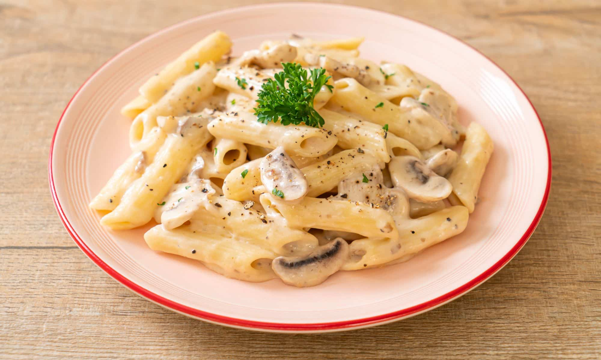

←
→
La Dolce Pasta




MACARRÃO TRADICIONAL
Um prato tradiconal e facil, mas que tem o melhor sabor
Um prato clássico de macarrão é composto de macarrão al dente, generosamente coberto por uma suculenta mistura de carne moída refogada, molho de tomate caseiro e temperado com ervas aromáticas.
O queijo derretido sobre o prato adiciona cremosidade, enquanto folhas frescas de manjericão dão um toque de cor vibrante e frescor ao prato.
O molho de tomate, levemente adocicado e ácido, envolve cada fio de macarrão, proporcionando uma experiência rica e reconfortante. É um prato simples, mas delicioso, que exala os sabores autênticos da cozinha italiana.
R$ 100,00